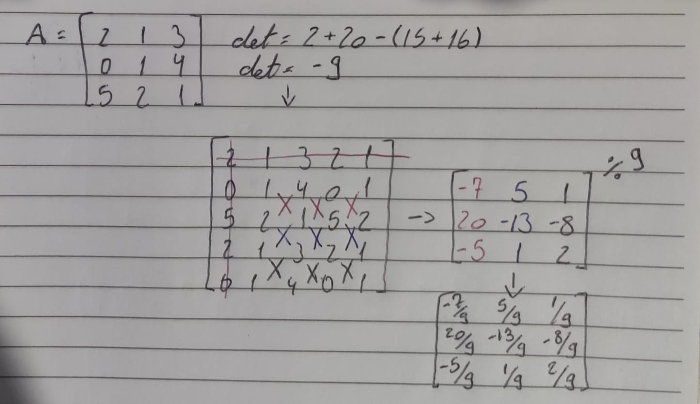

O que são?
Matrizes inversas são matrizes que multiplicadas por uma matriz qualquer (A) resultam em sua matriz identidade. Como vimos anteriormente, no primeiro trimestre matrizes identidade são quadradas, logo nossa matriz A também deverá ser.
Assim:
Calcular uma matriz inversa é um tipo de sistema linear que depende do numero de linhas da matriz, isso faz com que as contas sejam extensas. Por isso, usamos as regras práticas para resolvermos matrizes inversas.
Regra prática matriz 2x2
Para resolvermos uma matriz inversa 2x2 fazemos os seguintes passos:
- Calculamos o determinante da matriz (se for zero a matriz inversa não existe);
- Trocamos de posição os elementos da diagonal principal;
- Multiplicamos a diagonal secundária por -1;
- Dividimos todos os elementos pelo determinante.
Exemplificando:
Regra prática 3x3
Para conseguirmos resolver uma matriz inversa 3x3 devemos realizar os seguintes passos:
- Calcular o determinante (Se for 0 não há matriz inversa);
- Repetir as duas primeiras colunas da matriz á direita;
- Repetir as duas primeiras linhas da matriz em baixo;
- Cortar a primeira linha e a primeira coluna;
- Separar os elementos dentro dessa nova matriz como matrizes 2x2 e calcular seus determinantes;
- Colocar os determinantes em uma nova matriz 3x3 (de cima para baixo);
- Dividir essa matriz pelo determinante da original.
Por exemplo:
Criptografia
Com os conceitos de matriz inversa podemos criar frases criptografadas, basta transformarmos as letras em números (usando uma tabela de conversão) e multiplicarmos esses numeros pela matriz A. Para descriptografar fazemos a matriz inversa de A vezes os números. Porém, existe um problema, a matriz dos numeros criptografados pode ter uma quantidade ímpar de elementos, quando isso acontece colocamos um ponto ou um espaço no fim da matriz para conseguirmos resolvê-la.
Fórmula: M = mensagem, A = matriz, N = letras tranformadas em números.
>>Proximo Conteúdo
>>Página de Conteúdos